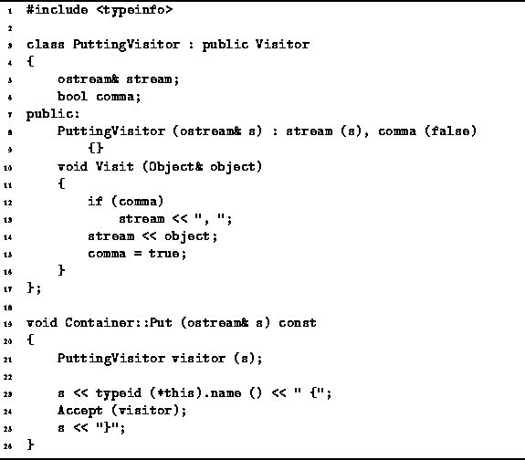

Data Structures and Algorithms
with Object-Oriented Design Patterns in C++
Data Structures and Algorithms
with Object-Oriented Design Patterns in C++
Program  gives the definition of the
default Put function for containers.
Recall that the Put function is a virtual function
inherited by the Container class from the
abstract base class Object.
gives the definition of the
default Put function for containers.
Recall that the Put function is a virtual function
inherited by the Container class from the
abstract base class Object.

Program: Container Class Put Function Definition
A default Put function is provided to simplify the implementation of classes derived from the Container class. The default behavior is to print out the name of the class and then to print each of the elements in the container, by using the Accept member function with the visitor PuttingVisitor.
This implementation makes us of run-time type information to determine the name of the class. The C++ operator typeid returns a reference to an instance of the typeinfo class which is defined in the standard header file typeinfo.h . This class has member function, name() , which returns a pointer to a character string that contains the name of the class.
 Copyright © 1997 by Bruno R. Preiss, P.Eng. All rights reserved.
Copyright © 1997 by Bruno R. Preiss, P.Eng. All rights reserved.